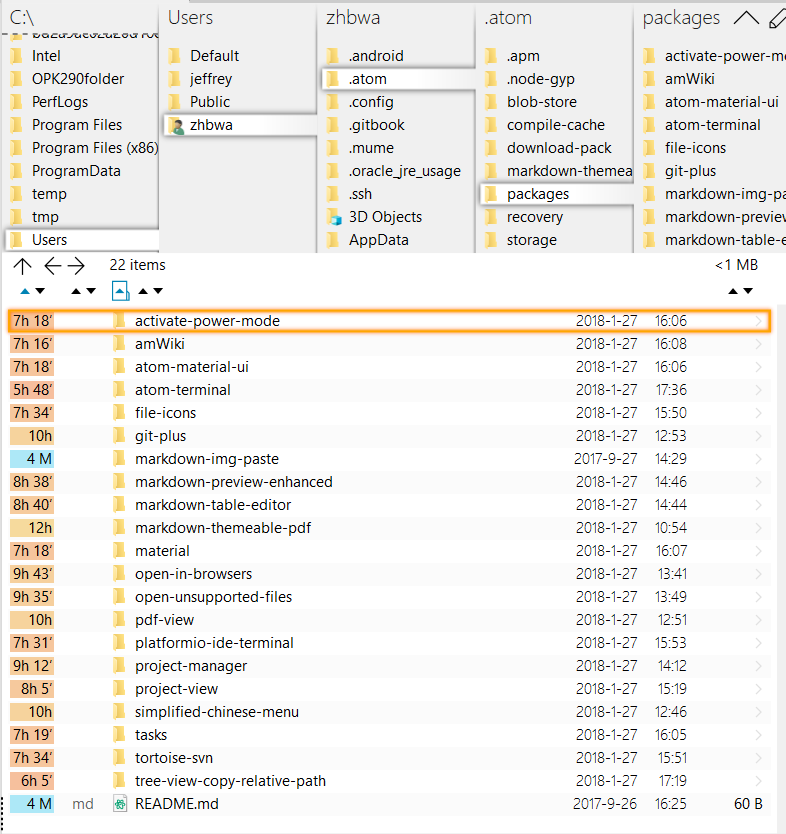
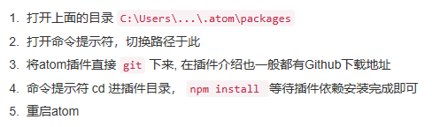
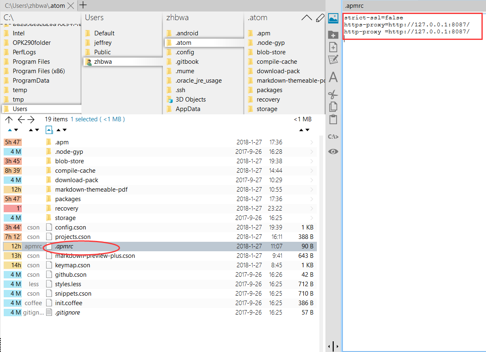

软件 | Atom必备插件、主题与使用经验
2018-01-27
1. 插件篇
我最常用的包： 
参考：https://www.jianshu.com/p/eac1879cb2e9
- simplified-chinese-menu Atom 的简体中文汉化语言包,目前最全的汉化包。包含菜单汉化、右键菜单汉化以及设置汉化
- atom-beautify 代码格式一键美化，支持多种语言格式化，例如：HTML, CSS, JavaScript, PHP, Python, Ruby, Java, C, C++, C#, Objective-C, CoffeeScript, TypeScript, Coldfusion, SQL …
- last-cursor-position 光标自由切换到上一次/下一次编辑位置
- minimap 仿sublime text的缩略代码查看，想找的地方一目了然。
- minimap-highlight-selected 实现minimap高亮选择内容，需安装前2个插件
- activate-power-mode 屏振效果,打字带特效,输入时有震撼效果
- color-picker 取色工具,在编辑器里面挑选颜色
- pigments 颜色显示插件,编辑器中直接查看代码所代表的颜色，工具虽小但是很实用。
- highlight-selected 选择某段代码自动高亮相同代码
- emmet HTML开发必备神奇，大大提高你的工作效率 加快web开发速度，提供snippet(代码片段)、abbreviation expand(简写展开)功能。
- docblockr 智能代码注释，让注释更有规范
- project-manager 快速打开储存的项目
- autocomplete-paths 自动补全文件路径
- atom-react-native-autocomplete react-native代码补全插件
- merge-conflicts 在 Atom 里面处理合并产生冲突的文件
- script 在atom下运行脚本，支持多种开发语言。
- browser-plus 编辑器内置浏览器
- ask-stack 在atom快速提问stackoverflow
- regex-railroad-diagram 正则表达式图形化
- advanced-open-file 快速的打开文件或新建文件，同时支持路径补全
- quick-highlight 代码高亮
- platformio-ide-terminal 终端工具
- open-in-browsers 在安装过的任意浏览器打开代码
- linter/ linter-eslint 代码错误提示，需要配合相应的规则插件进行使用，例如：linter-eslint(根据eslint规则进行js代码检验，需要安装linter插件)
- autocomplete-paths 填写路径的时候有提示
- hyperclick / js-hyperclick 这个两个插件配合使用，可以实现类似于IDE的Ctrl+click，跳转到变量函数声明或者定义的地方。
- Sublime-Style-Column-Selection 局部选择插件
- file-icons 左侧树状图下，根据文件类型左侧显示不同图标
- tool-bar 工具栏插件，需要配合其他插件
- flex-tool-bar 配合工具栏插件，自定义图标与事件
- atom-terminal-panel atom内置命令行工具
- language-javascript-jsx/language-babel 代码高亮，支持ES6,ES7, React JSX…
- es6-javascript ES6代码快捷键
- react-snippets react代码快捷键
- atom-bootstrap3 bootstrap3 html自动补全插件
- sync-settings 备份插件和配置备份，防止系统重装后需要重新查找插件，直接自动下载插件并且配置好atom
- atom-ternjs 支持多种语言代码补全，例如：ES5, ES6 (JavaScript 2015), Node.js, jQuery, Angular …
- vim-mode 有了 vim-mode 一定要装ex-mode和relative-numbers插件，前者让编辑器完美支持:w:s等命令；后者可以实现常规模式下的相对行号，用 vim 的自然会懂得其重要性。
- terminal-plus cmd+shift+t开启新控制台 ctrl+`打开 /关闭 控制台
- tortoise-svn svn插件
- Git/github git-plus—在 Atom 里面执行Git命令，不用来回切换终端和编辑器 git-control—git面板 tree-view-git-status—文件夹git状态 gist-it—快速分享代码到gist.github.com git-log图形化git提交记录
参考：https://www.cnblogs.com/wteng/p/6432241.html
Emmet： 他的前身是大名鼎鼎的Zen coding，可以快速生成代码，提高编码速度
autoprefixer： css前缀自动补全，超级方便有没有
csscomb： 使用这个工具可以帮助你重新排列CSS中定义的属性，帮助你按照你预定义的排序格式生成新的CSS 戳这了解更多 （小伙伴也可以自行百度）
open-in-browser/open-in-browser： 右键左侧菜单让html在浏览器中打开，不用再去文件里双击啦~
atom-ternjs： 该插件能对一个对象中拥有的对外提供的属性和方法都能通过suggest的形式提示出来，能对一个对象对外提供的接口有一个选择过程，可以理解为js代码自动提示。
atom-html-preview atom 代码编辑实时预览html页面
docblockr 智能代码注释，让注释更有规范
js-hyperclick js变量、方法点击跳转，（备注：还需要安装 hyperclick 插件）
打造MarkDown编辑器 https://www.cnblogs.com/libin-1/p/6638165.html
2. 二、主题篇
- monokai(主题)
3. 三、使用篇
插件安装不成功，可以有两个方法解决 下载离线包，放在C:\Users....atom\packages文件夹里面。

修改网络代理，使用翻墙代理：

4. 四、快捷键篇
- alt+shift+P 打开项目管理
- ctrl+t/p 当前项目查找文件
- ctrl+alt+o 快速打开文件，新建文件
- ctrl+shift+\ 快速定位文件目录
- ctrl+\ 显示\隐藏文件目录树
- 目录树下，使用a，m，delete来增加，修改和删除
- cmd-b 在打开的文件之间切换